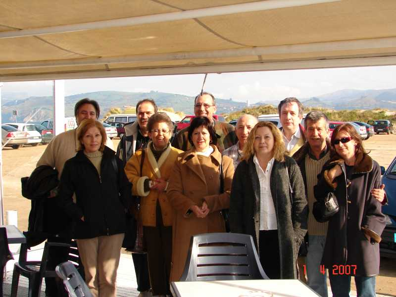

Bueno, la cita era a las cinco de la tarde en el Puntal de Laredo, restaurante El Bogavante, pero faltaron a ella tres de los convocados, Jaime González Merino, que se entretuvo en saludar a un amigo de la infancia.... y el Wetomaster y señora, que se perdieron y fueron a Logroño ¿...? palabra. Así que, llegaron una hora más tarde. Merino se incorporó al grupo en el Patronato.
 |